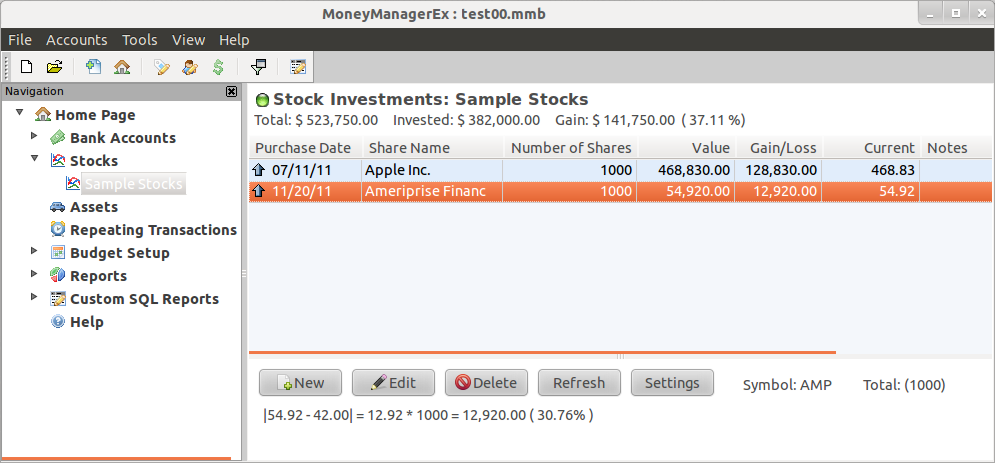
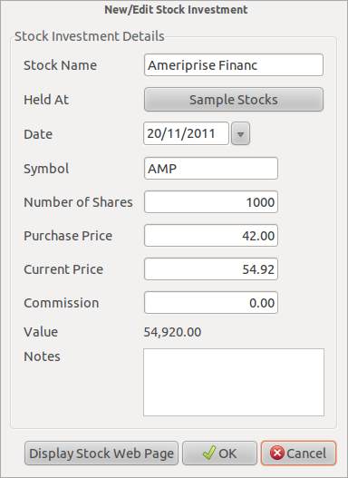
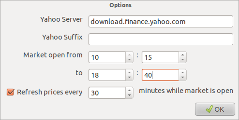

Részvénybefektetések |
MMEX-kszel figyelemmel kísérheti a részvény- és értékpapír-befektetéseit:
A részvényekre készítsen új számlát.
A számla varázslóban a Típust váltsa befektetésire.
A számla a navigációs fa részvény szakaszába kerül.
Az összesítő lapon a számla Részvény-ként jelenik meg.
A részvényszámlák a saját részvénybefektetések lapon jelennek meg.
A Részvénybefektetések lap

A
lapon az alábbi gombok találhatók:
Új
új
részvény felvételét teszi lehetővé.
Szerkeszt
az
adatok megváltoztatására
Töröl
részvények
törlésére.
Frissít
a
részvényárfolyamok online frissítését kezdeményezi.
Beállítások
megnyitja
a részvények párbeszédablakot.
Az
Új gomb
Amikor az Új gombra kattint egy ablak nílik
fel az adatok bevitelére.
|
 |
|
'Mutassa a részvény weblapját' gomb |
|
|
'Szimbólum' szövegmező |
|
A frissítés gomb
Amennyiben az egyes részvényei szimbólumát helyes állította be, és a frissítés gombra kattint, akkor a részvények pillanatnyi ára frissítve lesz.
Beállítások gomb
A beállítások gombra kattintva az alábbi párbeszéd nyílik meg:
|
 |
Ha sz összes részvénye egyazon országban van és egyazon tőzsdén forog, akkor a Yahoo kiterjesztést adhatja meg az általános beállításoknál. Ez az összes részvény tőzsdei kódját beállítja és lehetővé teszi a frissít gomb használatát a részvénybefektetések lapon.
Például: az Ausztrál tőzsdének
Yahoo jelölést alkalmazva '.AX' a kiterjesztése;
Google jelölést alkalmazva ':ASX' a kiterjesztése.
A tőzsdei szolgáltató az Eszközök –>Beállítások –> Egyéb részben változtatható meg.